정보처리산업기사 (2018-08-19 기출문제)
1과목: 데이터 베이스
1. 한 릴레이션의 기본키를 구성하는 어떠한 속성 값도 널(Null)이나 중복 값을 가질 수 없음을 의미하는 관계 데이터 모델의 제약 조건은?
- 참조 무결성
- 릴레이션 무결성
- 외래키 무결성
- 개체 무결성
(정답률: 83%)

2. 다음 트리를 중위 순서로 운행한 결과는?
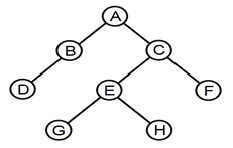
- A B C D E F G H
- D B A G E H C F
- A B D C E G H F
- B D G H E F A C
(정답률: 72%)
3. 이진 검색 기법을 적용하기 위한 선행 조건은?
- 자료가 정렬되어 있어야 한다.
- 순차 검색이라고도 한다.
- 자료의 개수가 짝수이어야 한다.
- 자료의 개수가 홀수이어야 한다.
(정답률: 82%)
4. 부분 함수 종속 제거가 이루어지는 정규화 단계는?
- 1NF → 2NF
- 2NF → 3NF
- 3NF → BCNF
- BCNF → 4NF
(정답률: 74%)
5. 뷰(VIEW)에 대한 설명으로 옳지 않은 것은?
- 삽입, 삭제, 갱신 연산의 용이
- 데이터의 논리적 독립성 유지
- 데이터의 접근 제어에 의한 보안 제공
- 사용자의 데이터 관리 용이
(정답률: 65%)
6. 관계형 데이터베이스의 릴레이션에서 속성에 대한 설명으로 옳지 않은 것은?
- 속성의 수를 Cardinality라고 한다.
- 데이터베이스를 구성하는 가장 작은 논리적 단위이다.
- 파일 구조상의 데이터 항목 또는 데이터 필드에 해당된다.
- 속성은 개체의 특성을 기술한다.
(정답률: 71%)
7. 색인 순차 파일의 색인 구역(Index Area)으로 옳은 것은?
- Track index; Cylinder index, Master index
- Primary Data index, Overflow index, Master index
- Track index; Cylinder Index Primary Data index
- Cylinder Index, Master Index Overflow index
(정답률: 75%)
8. 해싱 함수 중 키를 여러 부분으로 나누고 각 부분의 값을 더하거나 XOR(배타적 논리합)한 값을 홈 주소로 얻는 방식은?
- 제곱방법
- 기수변환법
- 폴딩법
- 숫자분석법
(정답률: 72%)
9. 다음 문장을 만족하는 SQL 문장은?
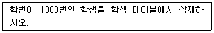
- DELETE FROM 학생 WHERE 학번＝1000;
- DELETE FROM 학생 IF 학번＝1000;
- SELECT * FROM 학생 WHERE 학번＝1000;
- SELECT * FROM 학생 CONDITION 학번＝1000;
(정답률: 84%)
10. 다음의 자료 구조 중 나머지 셋과 성격이 다른 하나는?
- 스택(stack)
- 트리 (tree)
- 큐(queue)
- 데크(deque)
(정답률: 83%)
11. 데이터베이스의 물리적 설계 단계에 해당되는 것은?
- 트랜잭션 인터페이스 설계
- 설계된 스키마의 평가
- 저장 레코드 양식 설계
- 논리적 데이터모델로 변환
(정답률: 62%)
12. 다음 질의문 실행의 결과는?
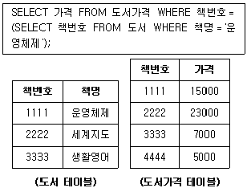
- 5000
- 7000
- 15000
- 23000
(정답률: 87%)
13. 관계 대수와 관계 해석에 대한 설명으로 옳지 않은 것은?
- 관계 대수는 원하는 정보가 무엇이라는 것만 정의하는 비절차적인 특징을 가지고 있다.
- 관계 해석은 관계 데이터의 연산을 표현하는 방법이다.
- 관계 대수로 표현한 식은 관계 해석으로 표현할 수 있다.
- 관계 해석은 원래 수학의 프레디킷 해석에 기반을 두고 있다.
(정답률: 76%)
14. Which of the following does not belong to the DML statements of SQL?
- ALTER
- INSERT
- DELETE
- UPDATE
(정답률: 74%)
15. 관계 대수 중 순수 관계 연산이 아닌 것은?
- project
- join
- union
- division
(정답률: 59%)
16. 자료가 다음과 같을 때, 삽입(insertion) 정렬 방법을 적용하여 오름차순으로 정렬할 경우 pass 2를 수행한 결과는?
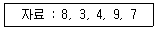
- 38497
- 34897
- 34798
- 34789
(정답률: 76%)
17. 시스템 카탈로그에 대한 설명으로 옳지 않은 것은?
- 데이터 사전이라고도 한다.
- 시스템 카탈로그에 저장되는 내용을 메타 데이터라고 한다.
- 시스템 자신이 필요로 하는 스키마 및 여러 가지 객체에 관한 정보 를 포함하고 있는 시스템 데이터베이스이다.
- 시스템 카탈로그의 정보를 INSERT, UPDATE, DELETE 문으로 직접 갱신할 수 있다.
(정답률: 78%)
18. 개체-관계 모델(E-R)에서 개체 간 관계타입을 나타낼 때 사용하는 기호는?
- 삼각형
- 마름모
- 타원
- 오각형
(정답률: 80%)
19. 큐(Queue)에 대한 설명으로 옳지 않은 것은?
- 입력은 리스트의 한끝에서, 출력은 그 상대편 끝에서 일어난다.
- 운영체제의 작업 스케줄링에 사용된다.
- 오버플로우는 발생될 수 있어도 언더플로우는 발생되지 않는다.
- 가장 먼저 삽입된 자료가 가장 먼저 삭제되는 FIFO 방식으로 처리 된다.
(정답률: 74%)
20. 다음 그림에서 트리의 차수는?
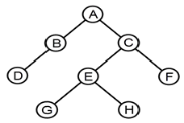
- 1
- 2
- 3
- 8
(정답률: 77%)
2과목: 전자 계산기 구조
21. 데이터의 입·출력 전송이 직접 메모리 장치와 주변장치 사이에서 이루어지는 인터페이스를 무엇이라고 하는가?
- DMA
- 캐시(cache) 메모리
- 어소시에티브 메모리
- 가상 메모리
(정답률: 56%)
22. 마이크로프로그램(micro program)에 대한 설명 중 옳지 않은 것은?
- 마이크로프로그램은 보통 RAM에 저장한다.
- 마이크로프로그램은 각종 제어신호를 발생시킨다.
- 마이크로프로그램은 마이크로 명령으로 형성되어있다.
- 마이크로프로그램은 CPU 내의 제어장치를 설계하는 프로그램이다.
(정답률: 60%)
23. 다음과 같은 논리회로가 주어졌을 때 출력 F의 값으로 가장 옳은 것은?
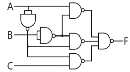
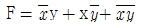
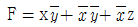
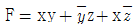
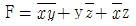
(정답률: 51%)
24. 다음 중 입력 장치가 아닌 것은?
- Scanner
- Mouse
- Line Printer
- Keyboard
(정답률: 81%)
25. 2의 보수를 사용하는 컴퓨터에서 10진수 5와 11을 AND 연산하고, Complement하였다면 결과는? (단, 연산 시 4비트를 사용한다.)
- (1)10
- (2)10
- (-1)10
- (-2)10
(정답률: 44%)
26. 어떤 자기 디스크 장치에 있는 양쪽 표면이 모두 사용되는 8개의 디스크가 있는데, 각 표면에는 16개 트랙과 8개의 섹터가 있다. 트랙 내의 각 섹터에 하나의 레코드가 있다면 디스크 내의 레코드에 대한 주소 지정에는 몇 비트가 필요한가?
- 10
- 11
- 12
- 13
(정답률: 41%)
27. 입·출력 장치와 기억장치의 데이터 전송을 위하여 입·출력 제어기 가 필요한 가장 중요한 이유는?
- 동작속도
- 인터럽트
- 정보의 단위
- 파일 관리
(정답률: 52%)
28. 동기고정식에서 마이크로 사이클 타임(micro cycle time)은 어떻게 정의되는가?
- 마이크로 오퍼레이션들의 수행시간 중 가장 긴 것을 마이크로 사이클 타임으로 정한다.
- 마이크로 오퍼레이션들의 수행시간 중 가장 짧은 것을 마이크로 사이클 타임으로 정한다.
- 마이크로 오퍼레이션들의 수행시간 중 가장 짧은 것과 긴 것의 평균시간을 마이크로 사이클 타임으로 정한다.
- 중앙처리장치의 클록주기와 마이크로 사이클 타임은 항상 일치된다.
(정답률: 47%)
29. 자기디스크의 특징이 아닌 것은?
- 접근 속도가 빨라 처리 시간이 빠르다.
- 여러 개의 파일을 동시에 사용할 수 없다.
- 주로 랜덤 액세스를 많이 한다.
- 보조기억장치로 널리 사용된다.
(정답률: 57%)
30. 다음과 같은 마이크로 동작에 해당하는 인스트럭션은?
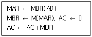
- AND
- STA
- BSA
- LDA
(정답률: 40%)
31. 주소 버스가 8비트로 256개의 주소가 할당되어 있는 시스템에서 각 장치 당 두 개씩의 주소가 할당되어 128개의 I/O 장치들이 접속 할 수 있는 주소지정 방식은?
- 분리형 I/O(isolated-I/O)
- 인터럽트-구동 I/O(interrupt-driven- I/O)
- 기억장치-사상 I/O(memory-mapped-I/O)
- 데이지-체인(daisy-chain)
(정답률: 60%)
32. 다음 그림과 같이 A, B 레지스터에 있는 2개의 데이터에 대해 ALU에 의한 OR 연산이 이루어졌을 때 그 결과가 출력되는 C 레지스터의 내용은?
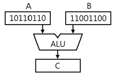
- 10000000
- 11010110
- 00110010
- 11111110
(정답률: 71%)
33. 주기억장치와 CPU 사이의 동작속도 불균형을 보완하고 시스템의 성능을 향상시키는 역할을 하는 장치는?
- Cache
- Channel
- Console
- Terminal
(정답률: 52%)
34. 전원 공급이 중단되어도 내용이 지워지지 않으며, 전기적으로 삭제하고 다시 쓸 수 있는 기억장치는?
- SRAM
- PROM
- EPROM
- EEPROM
(정답률: 58%)
35. 비수치적 연산에 속하지 않는 것은?
- 논리적 연산
- 4칙 연산
- 로테이트(Rotate)
- 시프트(Shift)
(정답률: 72%)
36. 메모리주소레지스터(MAR : Memory Address Register)에 대한 설명으로 가장 옳은 것은?
- 읽기 동작이나 쓰기 동작을 수행할 기억장소의 주소를 저장하는 주소 저장용 레지스터이다.
- 입·출력장치의 주소를 저장하는 주소 레지스터이다.
- 기억장치에 저장될 데이터 혹은 기억장치로부터 읽은 데이터를 임시적으로 저장하는 버퍼이다.
- 메모리로부터 읽어온 명령어를 수행하기 위해 일시적으로 저장하는 레지스터이다.
(정답률: 58%)
37. OP 코드 필드(Operation Code Field)가 4비트인 인스트럭션은 몇 가지 종류의 인스트럭션을 생성할 수 있는가?
- 23
- 23-1
- 24
- 24-1
(정답률: 64%)
38. 컴퓨터의 간접 사이클 동안 수행하는 것은?
- 오퍼랜드의 주소를 읽는다.
- 오퍼랜드를 읽는다.
- 명령을 읽는다.
- 인터럽트를 처리한다.
(정답률: 58%)
39. 병렬 가산기를 구성하는 모든 전가산기 단의 출력 캐리를 미리 처리하여 리플 캐리 지연을 제거한 가산기는?
- 리플 캐리 가산기
- 자리올림수 예측 가산기
- 직병렬 가산기
- 캐리 예측 트리 가산기
(정답률: 38%)
40. EBCDIC의 비트 구성에서 존비트(zone bit)는 몇 비트로 구성되는가?
- 1비트
- 2비트
- 4비트
- 6비트
(정답률: 63%)
3과목: 시스템분석설계
41. 코드화 대상 항목에 미리 공통의 특성에 따라서 임의의 크기에 블록으로 구분하여 각 블록 안에서 일련번호를 배정하는 코드는?
- 일련번호 코드(Sequence code)
- 구분 코드(Block code)
- 합성 코드(Combined code)
- 10진 코드(Decimal code)
(정답률: 60%)
42. 객체지향 개발 방법론 중 럼바우의 OMT 모델링 방법과 가장 거리가 먼 것은?
- 기능 모델링
- 처리 모델링
- 객체 모델링
- 동적 모델링
(정답률: 48%)
43. 객체지향기법에 관한 다음 문장이 설명하는 것으로 가장 옳은 것은?
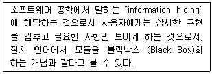
- Class
- Message
- Encapsulation
- inheritance
(정답률: 63%)
44. 시스템 개발비 산정 시 고려할 요소들로는 프로젝트 요소, 자원 요소, 생산성 요소 등이 있다. 다음 중 생산성 요소가 아닌 것은?
- 개발자의 능력
- 시스템의 신뢰도
- 개발비용과 개발시간
- 개발 방법론
(정답률: 44%)
45. 코드의 오류 발생 형태 중 입력 시 한 자리를 빠트리고 기록한 에러를 무엇이라고 하는가?
- random error
- omission error
- transcription error
- transposition error
(정답률: 71%)
46. 시스템분석가의 기본적인 조건과 가장 거리가 먼 것은?
- 기업목적의 정확한 이해
- 기계 중심적 사고
- 업무의 현상 분석능력
- 컴퓨터의 기술과 관리기법의 이해
(정답률: 76%)
47. 가장 강한 결합도를 가지고 있으며, 한 모듈이 다른 모듈의 내부 기능 및 그 내부 자료를 조회하도록 설계되었을 경우와 가장 관계 깊은 결합도는?
- 내용 결합도
- 외부 결합도
- 스탬프 결합도
- 자료 결합도
(정답률: 52%)
48. 코드의 오류 발생 형태 중 다음과 같이 입력 시 임의의 한 자리를 잘못 기록한 경우에 해당하는 것은?
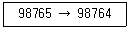
- Transposition error
- Omission error
- Transcription error
- Addition error
(정답률: 66%)
49. 코드 오류 체크의 종류 중 컴퓨터를 이용하여 데이터를 처리하기 전에 입력 자료의 내용을 체크하는 방법으로 사전에 주어진 체크 프로그램에 의해서 정량적인 데이터가 미리 정해 놓은 규정된 범 위(상한값, 하한값) 내에 존재하는지를 체크하는 것은?
- Mode Check
- Limit Check
- Format Check
- Block Check
(정답률: 78%)
50. 출력 방식 중 출력 시스템과 입력 시스템이 일치된 방식이며, 일단 출력된 정보가 다시 이용자의 손에 입력되는 시스템은?
- 디스플레이 출력 시스템
- 턴어라운드 시스템
- 파일 출력 시스템
- COM 시스템
(정답률: 78%)
51. 출력 설계 단계 중 다음 사항과 가장 관계되는 것은?
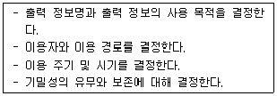
- 출력 정보 내용의 설계
- 출력 정보 매체화의 설계
- 출력 정보 분배에 대한 설계
- 출력 정보 이용에 대한 설계
(정답률: 71%)
52. 어떤 시스템의 운용 기간이 다음과 같을 때 평균고장간격(MTBF : Mean Time between Failure)을 계산하는 수식으로 옳은 것은?
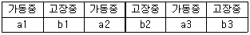
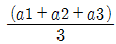
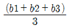
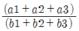
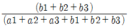
(정답률: 43%)
53. 어느 특정 조건을 주어진 파일 중에서 그 조건을 만족하는 것과 만족하지 않는 것으로 분리 처리하는 표준 처리 패턴은?
- Collate
- Distribution
- Merge
- Conversion
(정답률: 65%)
54. 해싱 함수에 의한 주소 계산 기법에서 서로 다른 킷값에 의해 동일한 주소 공간을 점유하여 충돌되는 레코드들의 집합을 의미하는 것은?
- Division
- Chaining
- Collision
- Synonym
(정답률: 60%)
55. 파일 편성 방법 중 순차파일 편성 방법의 특징이 아닌 것은?
- 집계용 파일이나 단순한 마스터 파일 등이 대표적인 응용 파일이다.
- 기본키 값에 따라 순차적으로 배열되어 있다.
- 파일 내 레코드 추가, 삭제 시 파일 전체를 복사할 필요가 없다.
- 기억공간의 활용률이 높다.
(정답률: 71%)
56. 정해진 규정이나 한계, 또는 궤도로부터 상태나 현상을 벗어나지 않도록 미리 감지하고, 바르게 진행되도록 하는 시스템의 특성은 무엇인가?
- 목적성
- 자동성
- 종합성
- 제어성
(정답률: 75%)
57. 다음의 입력 설계 단계 중 가장 먼저 행해지는 것은?
- 입력 정보 발생의 설계
- 입력 정보 매체의 설계
- 입력 정보 투입의 설계
- 입력 정보 수집의 설계
(정답률: 69%)
58. 기업의 측면에서 시스템 개발에 대한 문서화를 통해 기대할 수 있는 효과와 가장 거리가 먼 것은?
- 의사소통을 원활히 할 수 있다.
- 생산성을 향상 시킬 수 있다.
- 정보를 축적할 수 있다.
- 시스템 개발의 요식적 절차를 부각시킬 수 있다.
(정답률: 75%)
59. 모듈화의 특징으로 가장 옳지 않은 것은?
- 모듈은 상속하여 사용할 수 없다.
- 모듈의 이름으로 호출하여 다수가 이용할 수 있다.
- 매개 변수로 값을 전달하여 사용 가능하다.
- 모듈은 분담하여 독립적으로 작성할 수 있다.
(정답률: 65%)
60. 다음 중 코드 설계 순서가 가장 옳은 것은?
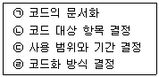
- ㉠ → ㉡ → ㉢ → ㉣
- ㉢ → ㉣ → ㉠ → ㉡
- ㉡ → ㉢ → ㉣ → ㉠
- ㉣ → ㉢ → ㉡ → ㉠
(정답률: 74%)
4과목: 운영체제
61. 운영체제에 대한 설명으로 가장 옳은 것은?
- 운영체제는 컴퓨터 자원들인 기억장치, 프로세서, 파일 및 정보 네트워크 및 보호 등을 효율적으로 관리할 수 있는 프로그램의 집합이다.
- 운영체제는 컴퓨터 하드웨어, 시스템 프로그램, 응용프로그램, 사용 자 등으로 구성되어 있다.
- 자원할당 측면에서 운영체제의 주된 기능은 파일 관리 입·출력의 구한 소스 프로그램의 컴파일 및 목적코드 생성 등이다.
- 운영체제는 시스템 전체의 움직임을 감사 감독 관리 및 지원하는 처리 프로그램과 주어진 문제를 응용 프로그램 감독 하에 실제 데이터 처리를 하는 제어 프로그램으로 구성된다.
(정답률: 60%)
62. 다음은 무엇에 대한 정의인가?
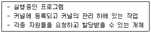
- processor
- locality
- process
- page
(정답률: 73%)
63. 다음 표와 같이 작업이 제출되었다. 이를 FIFO 정책으로 스케줄링하면 평균 반환시간은 얼마인가?
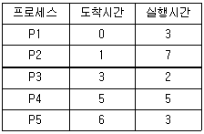
- 3
- 4
- 7.2
- 9.4
(정답률: 41%)
64. 처리기 스케줄러(process scheduler)가 하는 일은?
- 하나의 프로세스를 준비(ready) 상태에서 실행(run) 상태로 만든다.
- 하나의 프로세스를 대기(blocked) 상태에서 실행(run) 상태로 만든다.
- 하나의 프로세스를 제출(submit) 상태에서 준비(ready) 상태로 만든다.
- 하나의 프로세스를 제출(submit) 상태에서 대기(blocked) 상태로 만든다.
(정답률: 58%)
65. 다음 표와 같은 작업부하가 시간 0에 도착했을 경우 SJF 방식으로 스케줄링할 때 평균대기시간은?
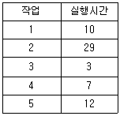
- 13시간
- 18시간
- 23시간
- 28시간
(정답률: 49%)
66. 페이지 교체 알고리즘 중 참조 비트와 변형 비트가 사용되는 것은?
- LFU
- LRU
- NUR
- FIFO
(정답률: 55%)
67. 운영체제의 성능 평가 기준 중 시스템을 사용할 필요가 있을 때 즉시 사용 가능한 정도를 의미하는 것은?
- Turn Around Time
- Availability
- Responsibility
- Reliability
(정답률: 69%)
68. 다단계 피드백 큐(Multilevel feedback queue)에 대한 설명으로 옳지 않은 것은?
- 짧은 작업에 우선권을 준다.
- 입·출력 위주의 작업권에 우선권을 주어야 한다.
- 마지막 단계의 큐에서는 작업이 완료될 때 까지 Round-Robin 방식을 통해 처리된다.
- 비선점(non-preemption)형 방식을 취한다.
(정답률: 52%)
69. 컴퓨터 분산시스템을 위한 소프트웨어에 대한 설명으로 가장 옳지 않은 것은?
- 이기종 컴퓨터 플랫폼에서 응용 프로그램 실행이 가능하다.
- ODBC 드라이버라는 미들웨어를 통해 응용프로그램이 데이터베이스에 접근이 가능하다.
- 한 컴퓨터에서 실행하는 다른 응용 프로그램과 통신할 수 있도록 한다.
- 자주 읽기 전용 메모리가 부착된 영구 저장소에 저장되는 실행 가 능한 명령들을 의미한다.
(정답률: 55%)
70. 라운드로빈(Round Robin) 스케줄링에서 시간 할당량에 대한 설명으로 가장 옳지 않은 것은?
- 시간 할당량이 커지면 FCFS 스케줄링과 같은 효과를 얻는다.
- 시간 할당량이 작아지면 프로세스 문맥 교환 횟수가 증가한다.
- 시간 할당량이란 단위 시간별로 작업 스케줄링을 하는 방식에서 그 단위 시간을 의미한다.
- 짧은 대화식 사용자에게는 시간 할당량을 크게하는 것이 효율적이다.
(정답률: 64%)
71. 운영체제의 핵심인 커널(Kernel)의 기능으로 가장 거리가 먼 것은?
- 인터럽트의 처리
- 파일 시스템의 유지보수
- 메모리 할당 및 회수
- 프로세스의 비동기화
(정답률: 47%)
72. 상호배제를 올바로 구현하기 위한 요구조건에 대한 설명으로 틀린 것은?
- 두 개 이상의 프로세스들이 공유 데이터에 접근하여 동시에 수행할 수 있어야 한다.
- 임계 구역 바깥에 있는 프로세스가 다른 프로세스의 임계구역 진입 을 막아서는 안 된다.
- 어떤 프로세스도 임계 구역으로 들어가는 것이 무한정 연기되어서 는 안 된다.
- 임계 구역은 특정 프로세스가 독점할 수 없다.
(정답률: 62%)
73. 구역성(locality) 대한 설명으로 옳지 않은 것은?
- 시간구역성의 예로는 순환 부프로그램 스택 등이 있다.
- 구역성에는 시간구역성과 공간구역성이 있다.
- 어떤 프로세스를 효과적으로 실행하기 위해 주기억장치에 유지되어 야 하는 페이지들의 집합을 의미한다.
- 프로세서들은 기억장치 내의 정보를 균일하게 액세스 하는 것이 아 니라 어느 한 순간에 특정 부분을 집중적으로 참조하는 경향이 있다.
(정답률: 50%)
74. HRN 스케줄링 기법 사용 시 우선순위가 가장 낮은 작업 번호는?
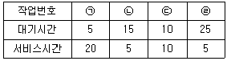
- ㉠
- ㉡
- ㉢
- ㉣
(정답률: 64%)
75. PCB에 대한 설명으로 옳지 않은 것은?
- 운영체제가 프로세스 관리를 위해 필요한 정보를 PCB에 수록한다.
- 프로세스가 생성될 때마다 해당 PCB가 생성되며, 프로세스가 소멸 되어도 PCB는 소멸되지 않는다.
- PCB에는 프로세스 식별 번호 프로세스 상태 정보, CPU 레지스터 정보 등이 수록되어 있다.
- “Process Control Block"을 의미한다.
(정답률: 75%)
76. 페이지 크기에 대한 설명으로 가장 옳지 않은 것은?
- 페이지 크기가 클 경우 전체적인 입출력 효율성이 증가된다.
- 페이지 크기가 작을 경우 페이지 맵 테이블의 크기가 작아지고 매 핑 속도가 빨라진다.
- 페이지 크기가 클 경우 프로그램 수행에 불필요한 내용까지도 주기억장치에 적재될 수 있다.
- 페이지 크기가 작을 경우 디스크 접근 횟수가 많아진다.
(정답률: 49%)
77. 시스템에서는 어떤 자원을 기다린 시간에 비례하여 프로세스에게 우선순위를 부여하는 에이징(aging) 기법을 적용하고 있다. 이는 어떤 현상을 방지하기 위한 것인가?
- 교착상태(dead lock)
- 무한연기(indefinite postponement)
- 세마포어(semaphore)
- 임계구역(critical section)
(정답률: 58%)
78. 여러 개의 병렬 프로세스가 공통의 변수 또는 자원에 접근할 때, 그 조작을 정당하게 실행하기 위하여 접근 중인 임의의 시점에서 하나의 프로세스만이 그 접근을 허용하도록 제어하는 것을 무엇이 라고 하는가?
- 상호 배제
- 페이징
- 세그먼테이션
- 프로그래밍
(정답률: 66%)
79. 다중 스레드 프로그램을 사용하는 주요 이점이 아닌 것은?
- 다중 프로세싱 하드웨어의 성능 향상
- 응용 프로그램의 처리율 향상
- 응용 프로그램의 응답 시간 증가
- 프로세스들 간의 통신 향상
(정답률: 71%)
80. 인터럽트의 종류 중 프로그램 명령 사용법이나 지정법에 잘못이 있을 경우나 허용되지 않는 명령문 실행의 경우 또는 divide by zero의 경우 등에 발생하는 인터럽트는?
- 입출력 인터럽트
- 외부 인터럽트
- 프로그램 검사 인터럽트
- 기계 검사 인터럽트
(정답률: 52%)
5과목: 정보통신개론
81. 다음 중 데이터 교환 방식이 아닌 것은?
- 회선교환 방식
- 메시지교환 방식
- 포트교환 방식
- 패킷교환 방식
(정답률: 57%)
82. 디지털 부호화 방식 중 비트 펄스 간에 0 전위를 유지하지 않고, ＋V와 -V의 양극성 전압으로 펄스를 전송하는 방식은?
- NRZ 방식
- RZ 방식
- Bipolar 방식
- DotPhase 방식
(정답률: 50%)
83. IEEE 802.11 표준화 규격 중 가장 높은 속도를 지원하는 것은?
- IEEE 802.11a
- IEEE 802.11b
- IEEE 802.11g
- IEEE 802.11ac
(정답률: 54%)
84. Hamming distance가 5일 때 검출 가능한 에러 개수는?
- 4
- 6
- 8
- 10
(정답률: 55%)
85. OSI 참조 모델에서 인접 개방형 시스템간의 정보 전송, 전송 오류 제어, 흐름 제어 등 물리적 연결을 이용해 신뢰성 있는 정보 전송 기능을 담당하는 계층은?
- 데이터링크 계층
- 물리 계층
- 응용 계층
- 표현 계층
(정답률: 53%)
86. IPv6에 대한 설명으로 틀린 것은?
- IPv6 주소는 128비트로 구성된다.
- 유니캐스트, 멀티캐스트 애니캐스트를 지원한다.
- 주소를 32비트씩 나눠서 8진수로 쓰고 마침표로 구분한다.
- 프로토콜의 확장을 허용하도록 설계되었다.
(정답률: 60%)
87. 패킷 교환망에서 DCE와 DTE사이에 이루어지는 상호작용을 규정한 프로토콜은?
- V.21
- V.25
- X.200
- X.25
(정답률: 72%)
88. 디지털 변조 방식 중에서 전송속도를 높이기 위하여 위상과 진폭 을 함께 변화시켜서 변조하는 방식은?
- ASK
- PSK
- FSK
- QAM
(정답률: 67%)
89. 8진 PSK 변조방식에서 반송파간의 위상차는?
- 45°
- 90°
- 18°
- 36°
(정답률: 61%)
90. 다항식 코드를 사용하여 오류를 검출하는 기법은?
- 순환중복검사(CRC)
- 수직중복검사(VRC)
- 세로중복검사(LRC)
- 검사합(Checksum)
(정답률: 57%)
91. HDLC의 프레임 구조에 포함되지 않는 것은?
- 주소부
- 제어부
- FCS
- 스타트 및 스톱비트
(정답률: 70%)
92. 전이중 통신에 대한 설명으로 옳은 것은?
- 송신을 하면서 동시에 수신도 할 수 있는 방식이다.
- 양방향 어느 쪽으로든지 데이터를 전송할 수 있으나 동시에 전송할 수는 없다.
- 송신측과 수신측을 서로 필요에 따라 교대하는 방식이다.
- 전기적으로 신호를 보내기 위해서는 송신측과 수신측을 연결하는 폐쇄회로를 구성해야 하므로 1개의 선로가 필요하다.
(정답률: 64%)
93. 대역폭이 1kHz이고 8진 PSK 변조방식을 사용할 때 채널용량(kb/s)은? (단, 잡음이 없는 채널로 가정)
- 4
- 6
- 8
- 10
(정답률: 34%)
94. MSK에 대한 설명으로 적절하지 않은 것은?
- 일정한 포락선과 위상연속의 특성을 갖는다.
- 대역폭 효율이 우수하다.
- 비동기검파가 가능하다.
- FSK 중에서 가장 대역폭이 넓은 경우에 해당된다.
(정답률: 40%)
95. BPSK의 전송 대역폭은 QPSK 전송 대역폭의 몇 배인가?
- 1/2
- 1/4
- 2
- 4
(정답률: 47%)
96. 광섬유 케이블에서 클래드(Clad)의 주 역할은?
- 광 신호를 반사시키는 역할
- 광 신호를 증폭시키는 역할
- 광 신호를 저장시키는 역할
- 광 신호를 입력시키는 역할
(정답률: 67%)
97. 비동기 전송모드(ATM)에 대한 설명으로 틀린 것은?
- ATM은 B-ISDN의 핵심 기술이다.
- Header는 5Byte, Payload는 48Byte이다.
- 정보는 셀(Cell) 단위로 나누어 전송된다.
- 저속 메시지 통신망에 적합하다.
(정답률: 61%)
98. 회선 교환 방식에 대한 설명으로 옳은 것은?
- 소량의 데이터 전송에 효율적이다.
- 물리적인 통신경로가 통신종료까지 구성된다.
- 일반적으로 전송속도 및 코드 변환이 가능하다.
- 전송 대역폭 사용이 가변적이다.
(정답률: 40%)
99. 전송시간을 일정한 간격의 시간 슬롯(time slot)으로 나누고, 이를 주기적으로 각 채널에 할당하는 다중화 방식은?
- 주파수 분할 다중화
- 파장 분할 다중화
- 통계적 시분할 다중화
- 동기식 시분할 다중화
(정답률: 65%)
100. 광섬유의 코어와 클래딩 경계면의 불균일로 인해 발생되는 광섬유 케이블의 구조 손실은?
- 흡수 손실
- 산란 손실
- 접속 손실
- 불균등 손실
(정답률: 51%)